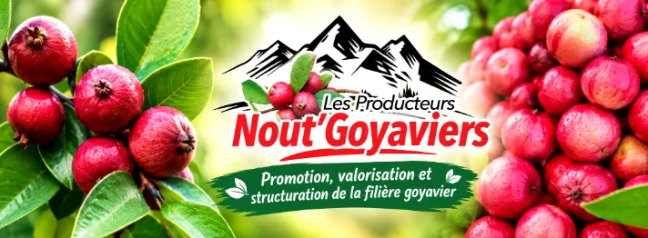
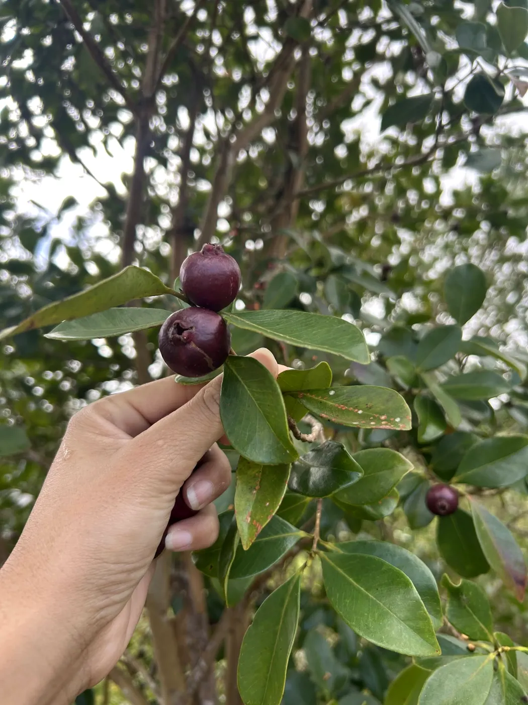
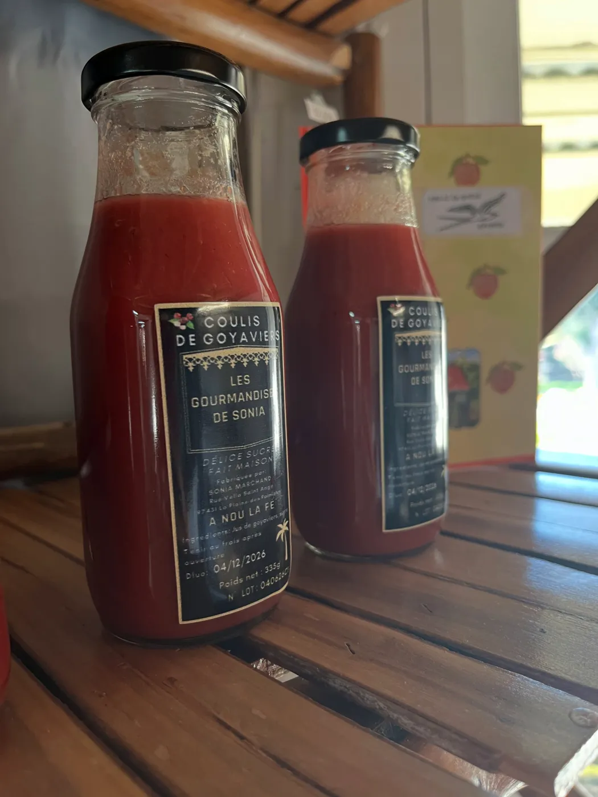
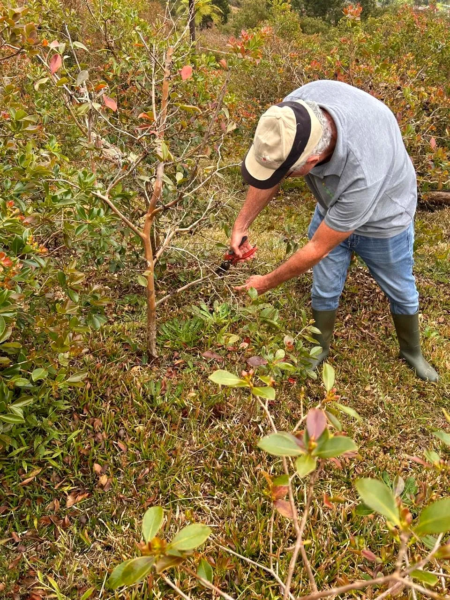
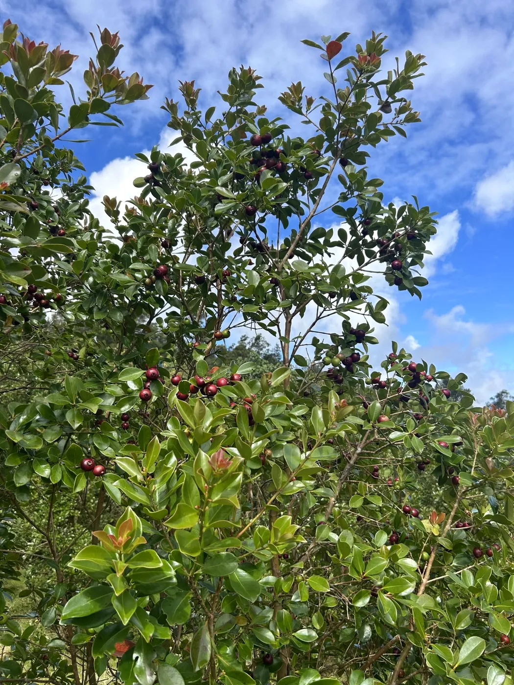
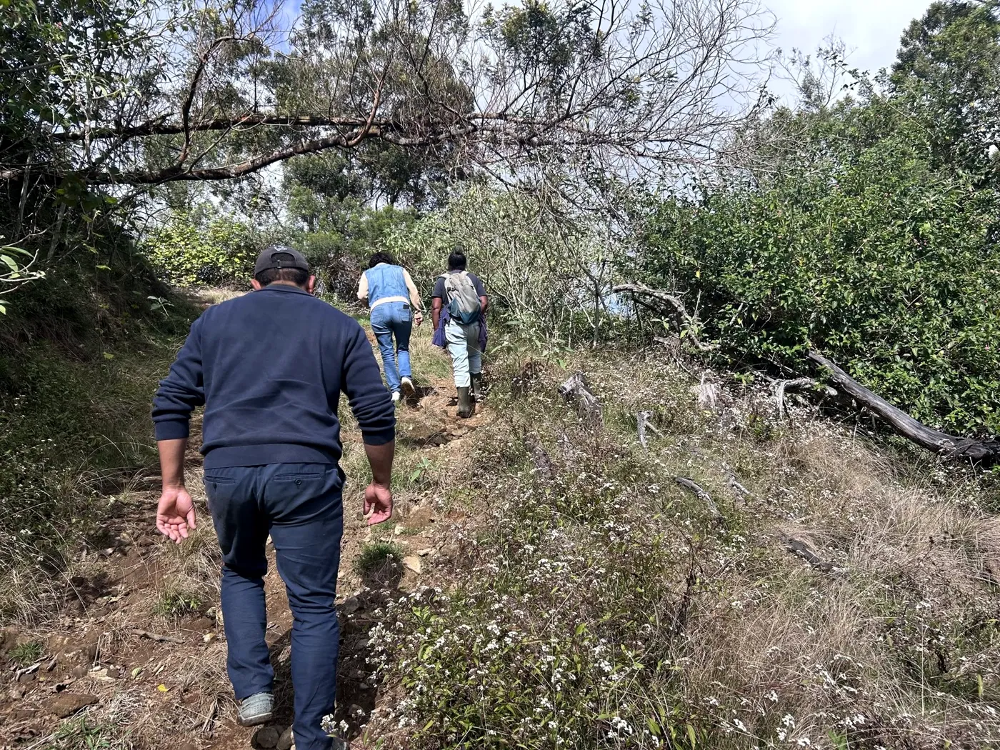
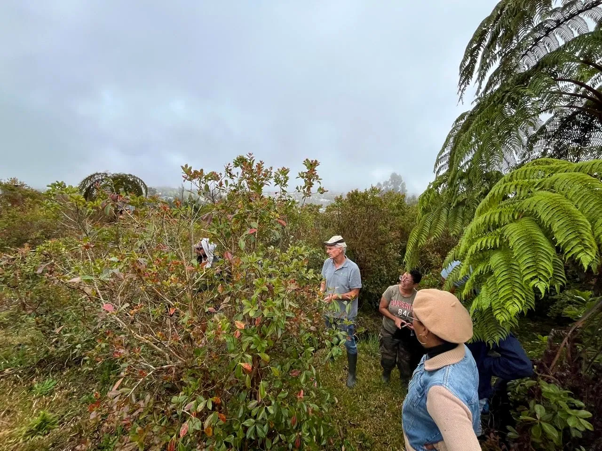

Coulis de goyavier
Tout le parfum du fruit, à verser sur un dessert, une glace ou un fromage blanc.

Producteurs · La Plaine-des-Palmistes
Des producteurs réunis pour faire connaître le goyavier comme une culture à part entière, le valoriser dans nos exploitations et le partager avec toute l'île.



Notre association
Nout Goyavier rassemble des producteurs de La Plaine-des-Palmistes autour d'une même envie : promouvoir, valoriser et structurer la filière goyavier, de l'exploitation jusqu'à votre table.
« Faire connaître le goyavier en tant que culture légitime, en la maîtrisant et en la valorisant sur les exploitations agricoles et sur le territoire. »
Nos saveurs
Une pause fraîcheur aux saveurs péi, à retrouver à la Maison des Goyaviers.
Tout le parfum du fruit, à verser sur un dessert, une glace ou un fromage blanc.
Le grand classique : vif, fruité, une vraie bouffée de fraîcheur des Hauts.
Une saveur originale à découvrir, pour les curieux et les amoureux des produits locaux.

Les produits du moment, à découvrir sur place.
Du champ au pot
Le goyavier pousse ici, dans nos exploitations, et chaque récolte devient une saveur à partager.

CultiverDes parcelles entretenues avec soin, dans les Hauts de l'île.
RécolterLa cueillette, à la main, quand les fruits sont bien rouges.Chaque année
Un rendez-vous pour célébrer notre terroir et nos traditions à La Plaine-des-Palmistes. On vous y attend nombreux !
23, 24 & 25 maiÉdition 2026 · La Plaine-des-Palmistes
Retrouvez nos produits à la Maison des Goyaviers. Pour toute question, un appel ou un message suffit.